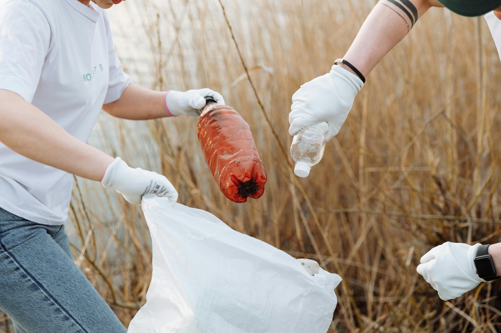

Projeto de reflorestamento urbano

Educação ambiental em escolas

Horta comunitária sustentável

Reciclagem no meio rural

Coleta de resíduos eletrônicos
Capacitação de jovens agricultores

Preservação de nascentes
Uso consciente da água

Painéis solares comunitários
Feiras de economia circular
Mutirão de limpeza de rios
Educação em reciclagem doméstica